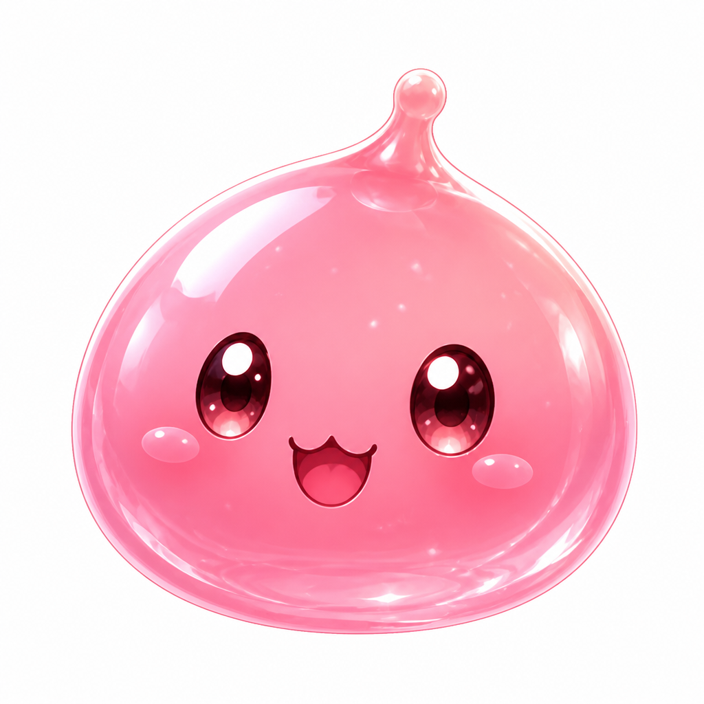
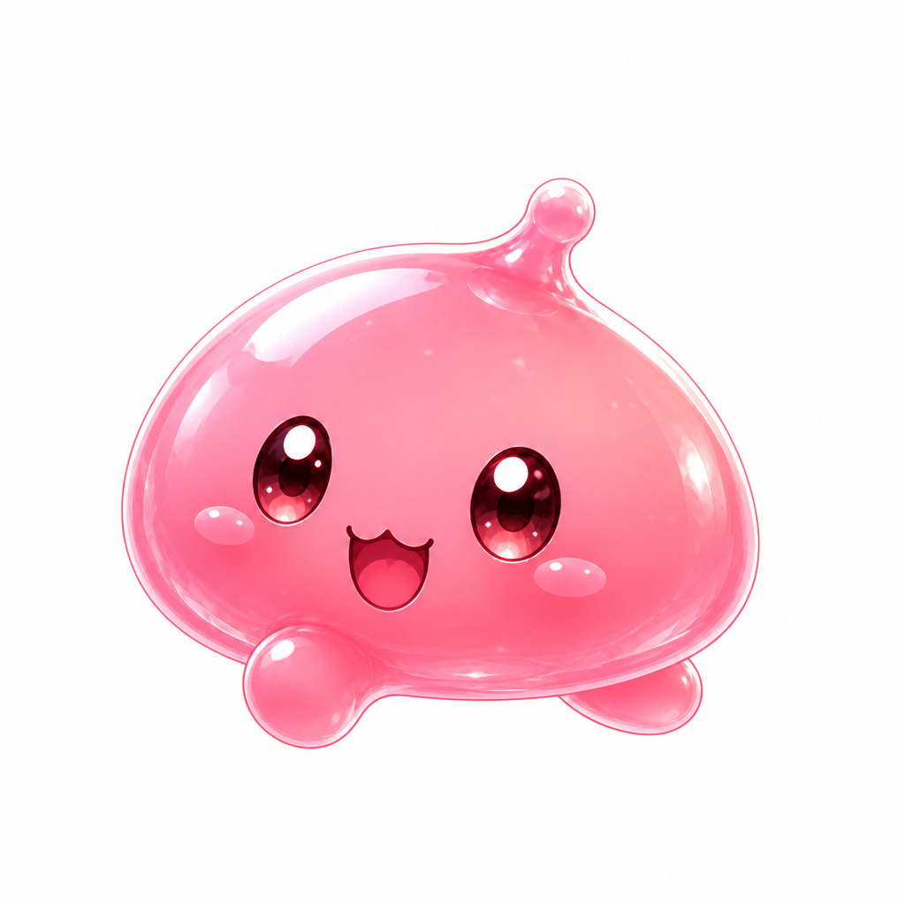
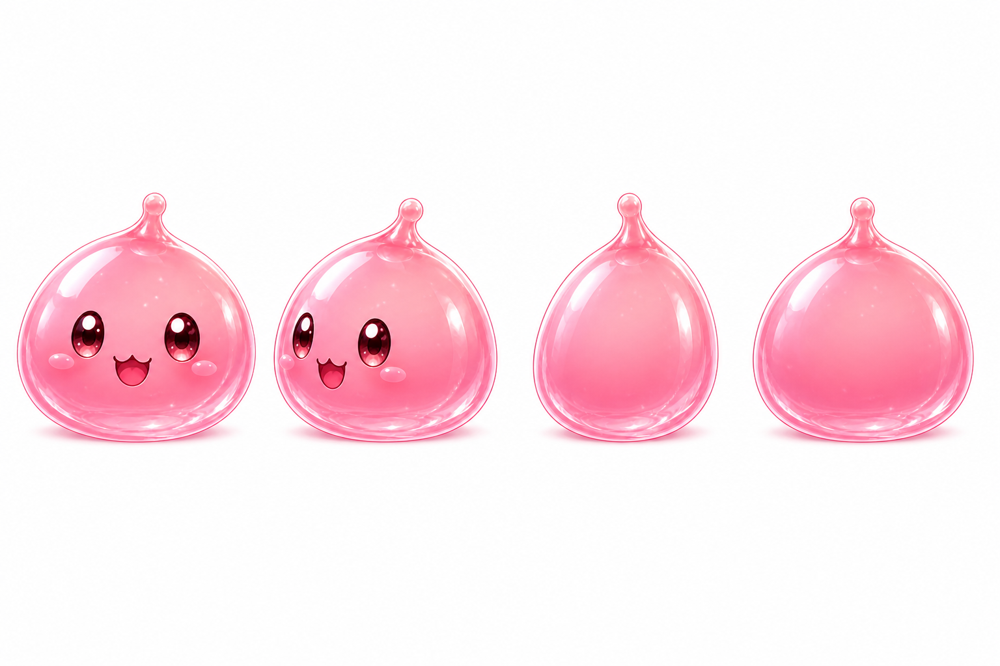

Origin-gloss Poring
Replacement sample for goro: same jelly as the card, but this is the walking mob. Drop RGBA frames into poring.spr after cutting the white.




Replacement sample for goro: same jelly as the card, but this is the walking mob. Drop RGBA frames into poring.spr after cutting the white.


